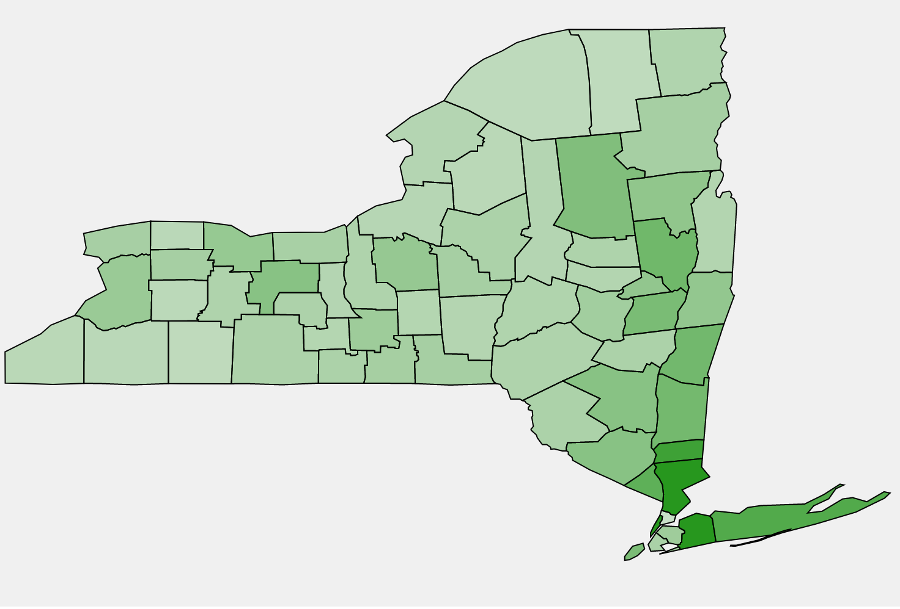

-
 Firstly, a lot of my projects can't really be shown online (or I haven't figured out how to do so yet...)
but can be seen at my Github!
Firstly, a lot of my projects can't really be shown online (or I haven't figured out how to do so yet...)
but can be seen at my Github!
-
 NYS Liquor Licenses v. DUIs (static data visualization)
More liquor licenses == more DUIs, right? Find out for yourself, right here! -
 Bigfoot Sighting Correlations (interactive data visualization)
Bigfoot Sighting Correlations (interactive data visualization)
A team of three sets out into the wilderness of the web, scraping for any evidence of the cryptid known as Bigfoot, Sasquatch, Yeti, etc... We then come back and compare our findings with a bunch of other variables to see what's really up! Click here to see more! -
 GEN1: A prototype of an app for connecting and assisting first-generation college students
GEN1: A prototype of an app for connecting and assisting first-generation college students
This was a semester-long, five-person project. We conducted user research to find problems, iterated on design, and conducted user testing. See it here!